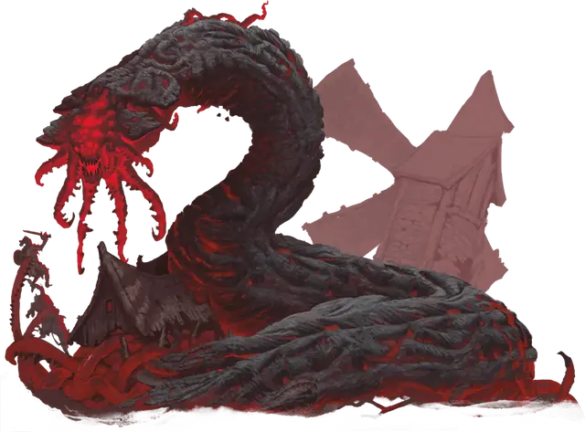

Червь порождений ядра
Core Spawn Worm
Громадная Аберрация, хаотично-злая

Класс Доспеха 18 (природный доспех)
Хиты 279 (18к20 + 90)
Скорость 60 футов, копая 40 футов
| мод | спас | ||
|---|---|---|---|
| СИЛ | 26 | +8 | +8 |
| ЛОВ | 5 | −3 | −3 |
| ТЕЛ | 20 | +5 | +10 |
| мод | спас | ||
|---|---|---|---|
| ИНТ | 6 | −2 | −2 |
| МДР | 8 | −1 | +4 |
| ХАР | 4 | −3 | −3 |
Навыки Восприятие +4
Уязвимость к урону холод
Иммунитет к урону огонь, психическая энергия
Иммунитет к состояниям испуг, очарование
Чувства слепое зрение 30 футов, пассивное Восприятие 14, чувство вибрации 60 футов
Языки понимает Глубинная речь, но не говорит
Опасность 15 (13000 опыта)
Бонус мастерства +5
Особенности
Иллюминация. Червь излучает тусклый свет в пределах 20 футов.
Лучистое зеркало. Если червь получает урон излучением, каждое существо в пределах 20 футов от него также получает этот урон.
Прокладывание туннеля. Червь может копать сквозь сплошной камень со скоростью копания, уменьшенной вдвое, оставляя за собой туннель диаметром 10 футов.
Действия
Мультиатака. Червь совершает две атаки: одну Шипастыми щупальцами и одну Укусом.
Шипастые щупальца. . Рукопашная атака оружием: +13 к попаданию, досягаемость 10 футов, одно существо. Попадание: 25 (5к6 + 8) колющего урона, и цель становится схваченной (Сл высвобождения 18). До тех пор, пока этот захват не закончится, цель опутана. Щупальца могут удерживать только одно существо одновременно.
Укус. Рукопашная атака оружием: +13 к попаданию, досягаемость 10 футов, одна цель. Попадание: 22 (3к8 + 9) колющего урона. Если цель — существо Большого размера или меньше, она должна преуспеть в спасброске Ловкости Сл 18, иначе будет проглочено. Проглоченное существо ослеплено и опутано, у него полное укрытие от атак и прочих эффектов, происходящих извне червя, и оно получает 21 (6к6) урона огнём в начале каждого хода червя.
Если червь получает 30 или больше урона за один ход от существа, находящегося внутри его, червь должен в конце этого хода преуспеть в спасброске Телосложения Сл 21, иначе он отрыгнет всех проглоченных существ, которые падают ничком в пространстве в пределах 10 футов от червя. Если червь умирает, проглоченное существо перестает быть опутанным им, и может высвободиться из трупа, потратив 20 футов перемещения, падая при выходе ничком.
Описание
У этого беспозвоночного ужаса есть дрожащие, шипастые щупальца, расположенные вокруг его массивной зубастой пасти. Потрескавшаяся и каменистая шкура червя пульсирует тусклым оранжевым свечением, как будто она может состоять из первичной лавы, постоянно находящейся на грани затвердевания в твердую породу.
Порождения ядра
Древнее Зло нападает на мультивселенную загадочными и разрушительными способами. Иногда они проникают на Материальный план, используя непостижимую энергию и тьму, обитающие в глубинах мира. Эти земные проявления отвратительных инопланетных замыслов известны как порождения ядра, и они столь же разнообразны по своей физиологии, сколь и ужасны.
Их концентрация в пустынных землях Блайтшора делает порождений ядра проблемой для исследований, и многие из тех кто пытался наблюдать или изучать этих кошмарных существ, редко возвращаются. Те, кто все-таки возвращается, часто являются оболочками своих прежних "я", которые говорят об ужасающих подземных лабиринтах извилистых пещер и кошмарных гнездах, куда других обитателей Мискат Стрэнда тащат вниз для какой-то адской цели.
Порождение Катастрофы. Аберрации, известные как порождения ядра, представляют собой подземную породу вестников, слуг, пехотинцев и лейтенантов Древнего Зла, пробужденных в глубинах катастрофическими действиями Богов-Предателей и их приспешников. Они часто появляются на поверхности планеты в результате сейсмических событий, таких как то, что создало бездонную Пропасть Мискат в Восточном Винандире. Колдуны и культисты иногда собираются вместе, чтобы ускорить прибытие порождений ядра на Материальный план, сосредотачивая свою мистическую силу на областях естественной сейсмической нестабильности, когда знаки и звезды правильно выстроены.